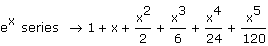
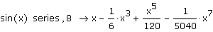

Series Expansion of an Expression |
To expand a function in a Taylor or Laurent series, select the function and either:
- or -
Then press [Enter].
If the function contains more than one variable, type a comma after "series," and then type a comma-separated list of the variable(s) around which you want to expand in the placeholder.
By default, Mathcad expands the function about the point 0, and returns the first six terms of the series. You can change the default behavior by including arguments after "series."

To expand around a point other than 0, specify a value for the variable or variables after the keyword "series", using the Boolean equals. For example,
To return a different number of terms in the series, type a comma after the variable, followed by an integer k. If the first non-zero term of the series corresponds to xk, Mathcad returns the terms from xk to xn+k-1. For example, the following calls for 8 terms of the series for sin(x). Since the coefficients of the terms with even powers are 0, only 4 terms are displayed.
